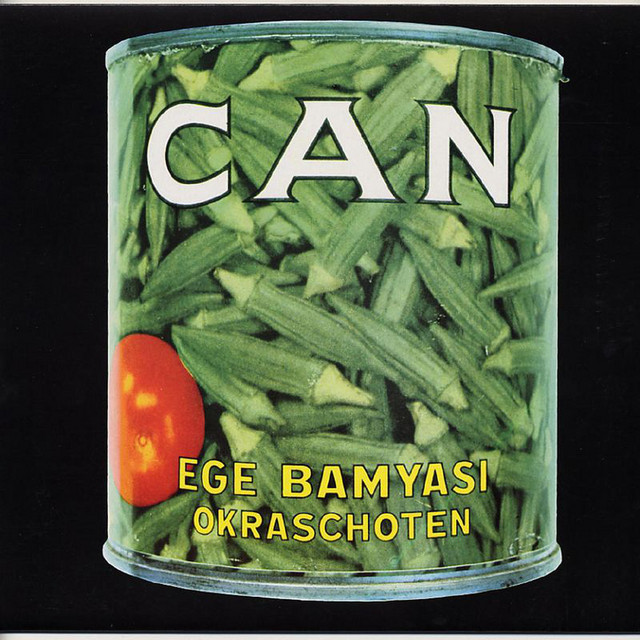

Detalle del Producto

Can - Ege Bamyasi
Año de lanzamiento: 1972
Descripción:
Ege Bamyasi es el cuarto álbum de estudio de la banda alemana de Krautrock Can, editado en 1972 por United Artists y Mute. Este álbum sigue el estilo de su predecesor, pero su sonido es mucho más comercial.